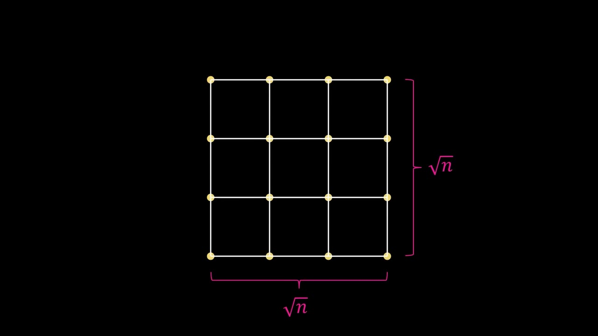
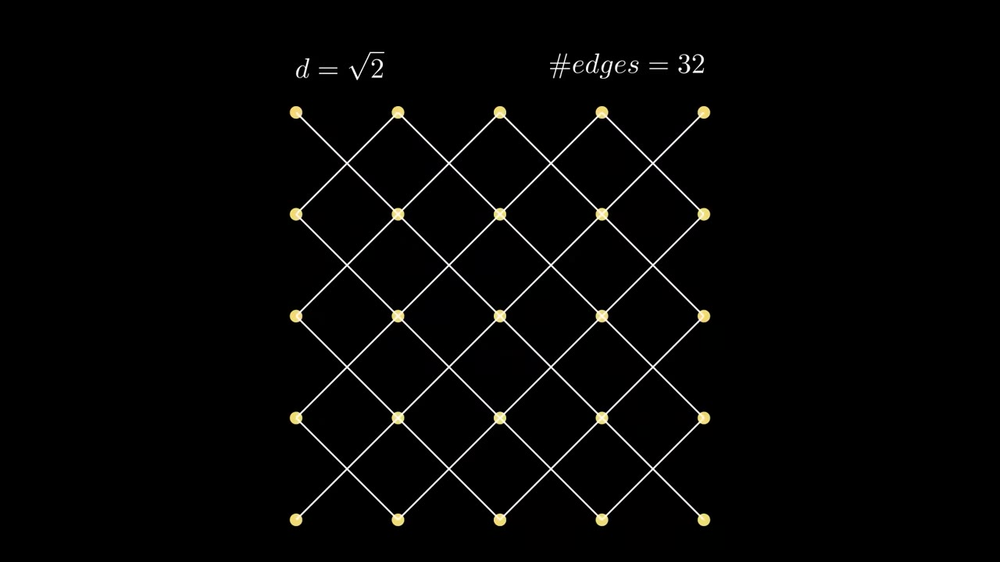
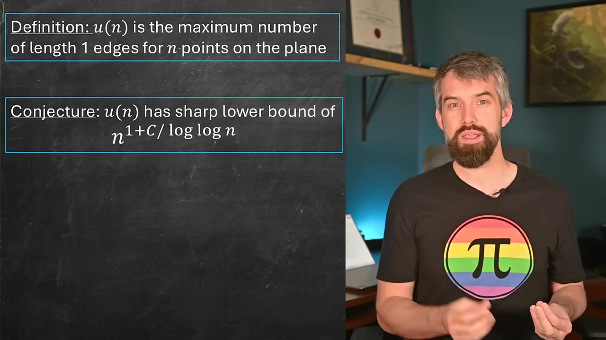
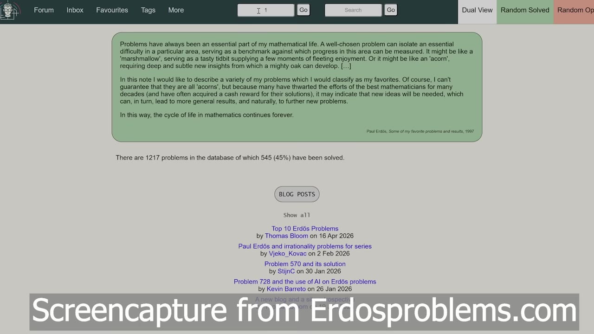
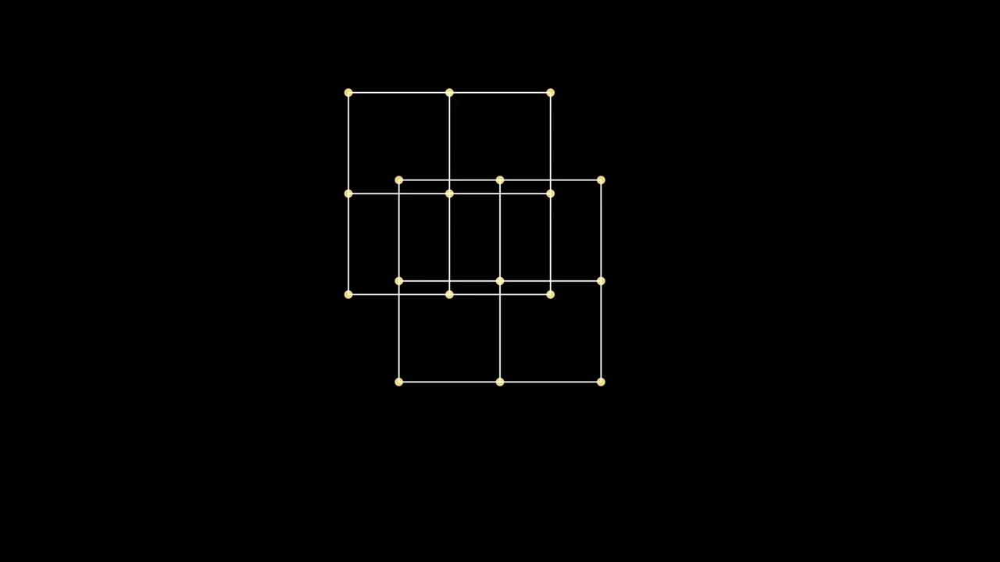

AI just disproved a 80-year-old math conjecture
An OpenAI model disproved the Erdős unit-distance conjecture — a decades-old lower bound that every combinatorial geometer had thought about. It's the first time AI has taken down a famous, well-studied problem.
Watch on YouTubeTL;DR
- AI broke a conjecture that stood since 1946 — Erdős's unit-distance lower bound
- The new proof uses novel ideas in algebraic number theory
- Fields Medalist Timothy Gowers calls it a milestone that would be accepted without hesitation
- This isn't AI fiddling with an obscure problem; it's a famous, well-studied one
- It raises big questions about what math looks like when AI can prove theorems
01 · The unit distance problem
Counting unit-distance pairs
Put n points on a plane. Count how many pairs sit exactly one unit apart. The answer depends on how you arrange them.
A sparse configuration gives you n − 1 edges. A square grid gives roughly 2n. But can you do better than that linear scaling?

02 · Erdős's trick
A denser lattice
In 1946, Erdős had a clever idea: don't just count edges at distance one. Count edges at every distance in a square lattice, then pick the most-common distance and shrink the whole grid to make that distance equal to one.
That single move bumps the edge count past linear — from 2n up toward n · log log n. The scaling improves, but only by a log-log factor.

03 · The conjecture
Sharp lower bound
The conjecture was simple: that lower bound is sharp. You can't do asymptotically better than n^(1+c/log log n).

It was proposed in 1946. For decades, mathematicians tried to find a better construction or prove the bound tight. Nobody succeeded.
04 · AI breaks it
n^(1+δ)
OpenAI's internal model found a completely new construction: n^(1+δ) for a fixed constant δ > 0.

That beats the conjecture for large enough n. Even a tiny δ eventually outpaces c/log log n, because log log n → ∞. The conjecture is dead.
This one's not [a small problem]. This is a famous, well-studied problem that many mathematicians have sunk their teeth into.— Dr. Trefor Bazett
05 · The Erdős problem list
Where this fits
This result belongs to a larger list of conjectures compiled from the work of Paul Erdős, the most prolific collaborator in mathematical history. AI has already proven a few theorems from that list — but this is different.

Previous AI results could be dismissed as solving "obscure" or "niche" problems. This one was studied by generations of mathematicians who failed.
06 · Reactions
What mathematicians say
A companion paper collected commentary from researchers in the field. The consensus: this is a big deal.
Timothy Gowers (Fields Medalist): "There is no doubt that the solution to the unit distance problem is a milestone in AI mathematics, and if a human had written that paper, I would have recommended acceptance without any hesitation."
Noga Alon: "Every mathematician working in combinatorial geometry has thought about this problem … the solution by the internal model is, in my opinion, an outstanding achievement in settling a long-standing open problem. The proof … goes into some novel ideas in algebraic number theory."
New construction method — lattice constructions in high dimensions projected down to the plane
New math — novel ideas in algebraic number theory, not just combinatorics
New precedent — the first AI result on a famous, well-studied open problem
07 · What's next?
The future of mathematics
The proof hints at the technique: constructing lattices in very high dimensions, then projecting them down onto the plane at carefully chosen angles.

It raises questions no one has firm answers for. What does a research mathematician look like in 5 or 10 years when these tools are standard? What does teaching mathematics look like?
What is mathematics going to look like in 5 or 10 years as a practicing mathematician who has these tools?— Dr. Trefor Bazett
:::